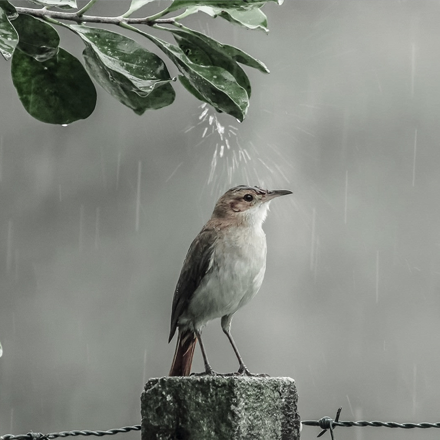

فرهاد مهراد - گنجشککِ اشی مشی

آلبوم : تک آهنگ
سال : 1355
آهنگساز : اسفندیار منفردزاده
ترانه سرا : متلی به جا مانده از قدیم
گنجشکک اشی مشی لب بوم ما مشین
بارون میاد خیس میشی برف میاد گوله میشی
میفتی تو حوض نقاشی
خیس میشی گوله میشی
میفتی تو حوض نقاشی
کی میگیره فراش باشی
کی میکشه قصاب باشی
کی میپزه آشپزباشی
کی میخوره حکیم باشی
گنجشکک اشی مشی
گنجشکک اشی مشی لب بوم ما مشین
بارون میاد خیس میشی برف میاد گوله میشی
میفتی تو حوض نقاشی
خیس میشی گوله میشی
میفتی تو حوض نقاشی
کی میگیره فراش باشی
کی میکشه قصاب باشی
کی میپزه آشپزباشی
کی میخوره حاکم باشی
گنجشکک اشی مشی